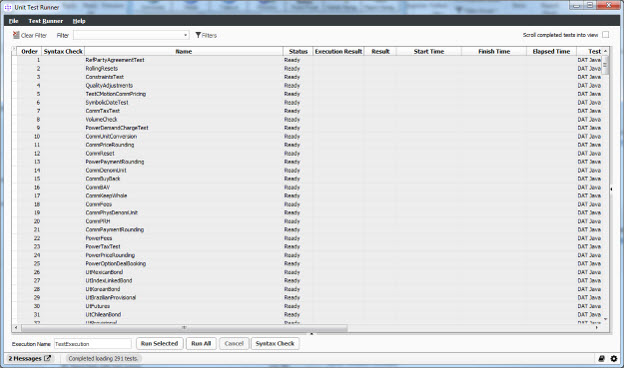

Unit Test Runner |
|
Unit Test Runner |
|
The Unit Test Framework provides a single, centralized source for the execution of unit tests within Endur/Findur.
The framework uses special “bridges” to identify tests in compiled libraries and assemblies. As long as unit tests are properly annotated and referenced, they can be viewed in the Unit Test Runner screen. Currently, the framework supports C, C#, and Java OTK / OC tests internally for development and JUnit externally for Professional Services and clients. The framework can be extended to support additional test-types by writing a “bridge” for the required type.
Note: There are multiple ways to access this window; however, only one way is defined because some features can only be accessed via this procedure.
1. From OpenLink Central, right-click anywhere on the header and select Launch Available Services. The Launch Available Services window displays.
2. Type Unit Test Runner in the Filter Service field, highlight Unit Test Runner in the Available Services panel, and then click Launch. The following window displays:

The Unit Test Runner menu contains the following items:
| Menu | Item | Description |
| File | Reload Tests | Reloads the full list of tests |
| Clear Filter | Clears the currently loaded filter, which causes all available tests to be displayed. | |
| Open Filter | Allows a previously saved filter to be opened and applied. Only tests matching the selected filter will be displayed. | |
| Load Filter from File | Allows a previously created filter file to be opened and applied. Only tests matching the selected filter will be displayed. | |
| Save Window Location | Saves the current window location and size, which will be used as the default location and size the next time Unit Test Runner is opened. | |
| Delete Saved Window Location | Delete a previously saved window location and revert back to the default window size and location. | |
| Launch Available Services | Allows for launching available services. | |
| Print Window | Prints a screenshot of the Unit Test Runner window. | |
| Exit | Closes the Unit Test Runner window. | |
| Test Runner | Run Selected Tests | Submits the tests currently selected in the grid for execution. |
| Syntax Check Selected Tests | Submits the tests currently selected in the grid for syntax check. | |
| Force Clear Execution Locks | Manually clears UTR execution locks from the UTR Execution Lock Table. | |
| Show Metadata Columns | Show/Hide metadata columns in the UTR test listing grid. When enabled, columns are added to the grid data to show all of the metadata keys and values for each test. |